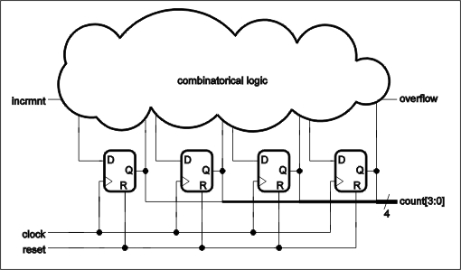
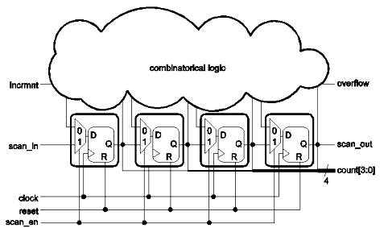
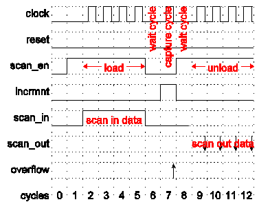
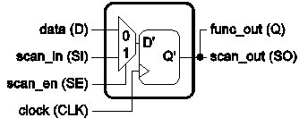
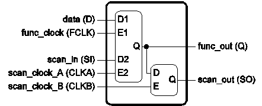

An Introduction to Scan Test for Test Engineers (Part 1 of 2)
Markus Seuring
Paper ID 115876
Abstract
For any modern chip design with a considerably large portion of logic, design for test (DFT) and in particular implementing scan test are mandatory parts of the design process that helps to reduce the complexity of testing sequential circuits. The basic concept of a scan test is to connect memory elements like flipflops or latches forming chains, so that shifting through scan chains allows to control and observe the states of the DUT.
Since scan vectors are based on regular and uniform structures, basic knowledge about scan designs, scan test modes and targeted fault models helps to interpret scan vectors. Therefore, in this paper a basic introduction to scan test is given, so that a test engineer who debugs scan test on an ATE can be more efficient in a first level of fault analysis - beyond just being able to do logging of failing pins and cycles.
Key words
scan test, scan cells, scan patterns, ATPG, AC scan, DC scan, scan debug
Introduction
Scan patterns are widely used to efficiently test the logic of DUT's. While additional functional tests might be necessary to fill some test gaps, a well prepared scan test allows detecting of a very high percentage of manufacturing failures, requiring a drastically smaller amount of test data and test time compared to functional tests.
To enable a scan test for a chip design, additional test logic must be inserted; this is called "scan insertion". Scan insertion consists of two steps:
- Replace plain memory cells like flipflops or latches by scan cells.
- Connect these together forming one or more chains.
Scan cells can be operated in two modes, the functional/mission mode used during normal operation and the scan mode that allows shifting through the scan chains.
Figure 1 shows a small example circuit without scan that implements a 4bit counter with just three inputs: a clock input "clock", an input "incrmnt" to increment the counters value and a reset signal "reset" to set the counter back to "0". The outputs "count" allow to read the counters value. Finally, output "overflow" is a flag which is set if the counter exceeds its counting range.
Figure 2 shows the same circuit after scan insertion, with scan cells forming a chain with input "scan_in" and output "scan_out". The input "scan_en" has been added in order to control the mode of the scan cells.

With scan cells supporting functional/mission mode and scan mode, in general scan test is working as follows[1]: Shifting into scan chains is used to directly set the state of the DUT, then one or more clock cycles of normal operation is applied, optionally DUT outputs are checked for correct values, and finally the resulting state is shifted out via scan chains and compared to the expected state to check for the correct behavior of the DUT.

Figure 3 shows an example of a scan pattern for the 4bit counter introduced above. When data is shifted into the scan chain, i.e. the scan chain is loaded in scan mode, the required time depends on the size of the longest scan chain and the underlying frequency, called "shift frequency" or "scan frequency". Typically, scan chains consist of hundreds or thousands of scan cells and the shift frequency is lower than frequencies used for functional test. In Figure 3, the shift cycles for loading the scan chain are four cycles, cycles 2-5, according to the number of scan cells in the design shown in Figure 2. The shift cycles can be easily identified, because "scan_en" is high and the clock is toggling.
After the scan load sequence and optionally additional wait cycles, one or a few clock cycles are applied in functional/mission mode to launch certain events in the DUT and to capture DUT's response. These cycles are often called "launch cycles" and/or "capture cycles" and might run with a different frequency compared to the normal operation of the device. In Figure 3 cycles 6 and 8 are wait cycles that have been inserted because of the transitions of "scan_en" to low and then back again to high - in order to give enough time to propagate the transitions to the scan cells. There is only one capture cycle 7 (and no dedicated launch cycle), running with the same clock as for shifting, but the scan cells operate in functional/mission mode ("scan_en" is low). Furthermore, in this cycle the output "overflow" is compared to "high".
Finally, the captured response is shifted out of the scan chains and compared to expected values; this is also called "chain unload". In Figure 3, chain unload is performed in cycles 9-12. The whole sequence of chain load, launch/capture cycles and chain unload is called in the following a scan pattern. Usually a scan test consists of hundreds or thousands of scan patterns.

Obviously, while the response data of a scan pattern is shifted out of a scan chain, the scan chain can be simultaneously loaded with the scan input data of the following pattern. This can be any data, so this is the reason, why in Figure 3 the next scan in data is not shown explicitly.
Furthermore, the required test time for a scan test depends mostly on the number of scan patterns, the size of the largest scan chain and the shift frequency, but less on the frequency during launch/capture.
The efficiency of a scan test compared to a functional test can be easily explained with the small example of a 4bit counter given above: Of course, a test for the overflow flag would be mandatory. Using a functional test, this can be done only by resetting the counter and increment the value for 2^4=16 clock cycles. On the other side, if a scan test is implemented, for testing the overflow flag it is enough to shift into the scan chain the "1111" pattern and then increment the counter once in normal operation mode and check the overflow flag. Shifting out data can be used to check, if the counters value was correctly set back to "0000", essentially requiring only 9 cycles. Figure 3 shows the corresponding pattern and because of some padding four cycles are added. In cycle 7 the value of the output "overflow" is compared to "high". Additionally, in this cycle the test could also check if "0000" is the value of the outputs "count[3:0]" (not shown in Figure 3).
While the difference between 16 clock cycles for a functional test and 9 or 13 clock cycles for scan test is rather small in this case, obviously it will become a huge difference if instead of a 4bit counter a 64bit counter has to be tested.
Scan cell design
In general, modern scan architectures can be mapped to two major types of scan designs: Scan chains based on Mux-D Flipflops and Level Sensitive Scan Design (LSSD).
Mux-D Flipflops are basically edge-triggered flipflops with an additional two-input multiplexer in front of the data input. The selector of this multiplexer is a signal often called "scan_enable", "shift_enable", "scan_mode" or "test_mode".
If this selector signal is low, the multiplexer passes through the functional data; so that the scan cell works in functional/mission mode. If the selector is high, scan-in data passes through.
There is only a single output for both, functional and scan data. The flipflop is working with a single clock used for both, functional mode and scan data shifting.
Figure 2 shows a standard Mux-D Flipflop design with "scan_en" as "scan_enable" or "shift_enable" and "SI" and "SO" as input and output for scan data.

Mux-D Flipflops are widely used, since this gate produces only a small area overhead. Only one additional signal, the selector signal, has to be routed to each flipflop. Generally, there are no or very relaxed timing constraints on this signal. However, if the scan test should cover delay faults by launching transitions with the last shift cycle, then the selector must be routed like a clock tree.
For scan chains based on Mux-D Flipflops it is harder to fix hold-time issues, because reducing the scan shift frequency does not help and therefore a re-design is required.
The additional multiplexer at the input is in the functional data path and therefore increases delay for the data path, i.e. it might reduce the maximum frequency for functional operation.
Increasing the projected scan frequencies during a design process in order to reduce the scan test execution time, requires additional effort and might have a very negative effect on power consumption, since there is only one clock tree shared between the functional mode and the scan shift mode.
LSSD scan cells consist of level-sensitive latches and there is no selector signal. Instead, the operation of the scan cell is controlled by three clocks as follows: Depending on what clock is toggling, the cell stores functional data, or it stores scan data or it propagates scan data to a dedicated scan output. Figure 5 shows an example of an LSSD cell that consists of two D-latches. The latch that stores data has two input ports, one for functional data and one for scan data.

LSSD is not so common, for example high performance designs might be based on this scan architecture. There are several pros and cons:
- Pro
- No additional delay in data paths
- No hold time issues
- Separate clock trees, easier to constrain timing in design
- Contra
- Larger area overhead
- Two additional clock trees must be routed
Full scan design
In modern chip designs with a considerable amount of random logic, i.e. high number of flipflops or latches, virtually every flipflop/latch is replaced by a scan cell in order to achieve high fault coverage and minimized test vector size. Then it is called a "full scan design".
There also exists the notion of "partial scan": Partially, flipflops/latches are not replaced by scan cells and not included in scan chains - to reduce the area overhead of scan or for performance reasons. That means lower fault coverage and larger scan patterns incorporating multi-cycle capture sequences for sequential testing.
Because the cost of area and the cost of a single transistor on a die have been decreasing dramatically for years and, in comparison the test costs have been reduced by a much lower rate, cost of area is no longer a reason for "partial scan": Now it is more efficient to spend more "cheap" area for test logic in order to save "expensive" test time and tester memory. However, as mentioned above, performance might be still a reason for implementing "partial scan".
Scan clock generation
Scan clocks for loading and unloading scan chains in shift mode are usually provided by the ATE. Clocks for the functional/mission mode of launch/capture cycles might be provided by the ATE or might be generated on the DUT.
In particular, for a scan test with launch/capture cycles running at the same speed as for normal operation, it might be necessary to provide launch and capture clock pulses with high frequencies. If the high frequencies (up to several GHz) should be generated by the ATE, very fast tester channels and a well designed infrastructure to transmit the clock pulses to the clock input pin of the DUT are required. Furthermore, package and pad design of the DUT must be capable of bringing the clock pulses on the die. Such a setup might be very expensive or might even not be feasible.
Often a DUT running on a high speed for normal operation include a clock generator, that can be used to produce high frequencies for delay fault testing. Test logic must be added to control short sequences of clock pulses in the functional/mission mode for launch/capture cycles. Usually, this logic can be re-configured for each scan pattern in order to select separately for each pattern, how often and at what frequency a certain functional clock is pulsed. Then the ATE provides just a reference signal for clock generation on the DUT.
To be prepared for the case that the clock generation on the DUT is broken, usually DFT implements a bypass mode, so that launch and capture clock pulses with a lower frequency can be generated in the classical manner using the ATE.
Automatic test pattern generation
The software that generates test vectors for the scan test is called "Automatic Test Pattern Generation" (ATPG) software. In the past chip design flows were often based on in-house tools and these in-house tools were used for the scan test, but this has changed for several reasons, so that now almost all scan patterns are generated with commercial tools:
- Modern designs incorporate hundreds of thousands of scan cells requiring stable software that can handle huge amounts of data.
- Pattern generation algorithms had to improve and become faster in order to achieve high fault/test coverage for these large designs within a reasonable computation time.
- While classical scan test was just addressing single stuck-at faults, now other fault models like delay faults or bridging faults become more important.
- As the number of scan cells increases, the size of scan test patterns and the run time of scan tests on ATEs is increasing as well, therefore now sophisticated scan compression methods are required to overcome these issues.
Commercial ATPG tools are available from major EDA companies like Cadence, Mentor Graphics or Synopsys. An ATPG tool needs as input design data of the device under test (DUT), i.e. a logical gate level description in a hardware description language, and setup files defining scan specific settings: input sequences to configure scan mode for the device, fault models, projected coverage, and maximum pattern size and so on. With these inputs an ATPG tools checks if the design is capable to perform the scan test according to the settings, then it generates scan test patterns, performs fault grading to determine the test/fault coverage and dumps scan patterns according to the user setting. The most common formats are the Standard Tester Interface Language (STIL) format and the Waveform Generation Language (WGL) format.
A precondition for a passing scan test on a DUT is that the test's basic functionality is working, i.e. the scan chains are well connected and scan shifting can be performed correctly. Thus, usually scan patterns start with a scan integrity test, that shifts a sequence of "0"s and "1"s through scan chains until this sequence is observable at the scan outputs. Various names exist for this test type, for example "chain check", "scan integrity test" or "chain test".
Scan compression
As designs become larger, including hundreds of thousands or even millions of scan cells, the size of plain scan test patterns, the ATE memory required to store these patterns and the scan test time increases as well. Thus for many years the industry has been looking for methods to reduce scan test data and test time.
The most common solution to address this issue is the approach of scan compression which is included in various flavors in modern ATPG tools. Scan compression is based on the fact that scan tests consist of two major types of scan patterns:
- Patterns covering the easy-to-detect faults - almost every bit of the unloaded chains helps to cover a fault or a set of faults.
- Patterns covering the hard-to-detect faults - only a small number of faults are detected by the whole pattern that has a much narrowed focus and therefore, most bits of the loaded and unloaded chains do not contribute to the fault coverage and can be changed without any impact on the fault coverage.
The first type of scan patterns is often a set of just hundred or a few hundreds patterns, while there are thousands of patterns of the second type. By setting the non-contributing bits in the right way, these can be used to generate patterns that can be easily compressed with an appropriately chosen compression scheme. Re-simulation of these new patterns shows, that these patterns make detectable a lot of the easy-to-detect faults, so that patterns of the first type might become obsolete.
Commercial scan compression solutions consist of two parts:
- Test logic that must be additionally implemented in the DUT to decompress scan-in data (load), to compress scan-out data (unload) and some control logic to dynamically modify the compression settings.
- An enhanced ATPG algorithm that is aware of the additional test logic and the compression scheme, so that compressed patterns are generated, taking benefit from the observation described above.
Finally, the output of the ATPG tool are vectors with the compressed scan-in and scan out data, reducing scan data size and scan test time
The scan compression is implemented in such a way that the number of scan input/output pads is much lower than the number of scan chains. That means, for the plain scan setup a single scan input/output pair covers always only one chain, with scan compression it may cover 10 to 100 or even more smaller scan chains, depending on the user-defined scan compression ratio. Thus a scan design with compression consists of many "basic" scan chains of a rather small size, reducing the test time spent on loading/unloading scan chains.
Scan patterns for a design with scan compression are not fundamentally different from patterns for the plain scan architecture. During the loading scan data is shifted into the scan chains, then the launch/capture cycles require a switch to functional/mission mode and finally, unload happens and data is shifted out. The only difference is, that scan data is compressed - nevertheless, it is still a sequence of "0"s and "1"s. Therefore, scan compression has no effect on the representation of scan patterns in the test vectors.
However, it may have some side-effects: Using STIL and some additional features on V93000, one can easily conclude from the fails in a scan chain, what scan cell caused the fail. With scan compression, this mapping might be ambiguous, because now the test response bits of a single scan output is related to various bits of several short basic chains.
Scan test through TAP/JTAG interfaces
In order to configure and perform tests and finally to access test results, a DUT provides a test interface connected to a test controller. In most cases the test interface and controller are based on the IEEE 1149.1 standard that describes a test access port (TAP) and a test controller that originally was specified to support boundary scan. Usually DFT engineers enhance the controller to configure and enable a wide range of test and debug modes, for example scan test, MBiST, LBiST, IOBiST, IO loopback modes, IDDQ tests; modes to burn and/or read fuses, to monitor internal signals like clocks, to access thermal sensors or ring oscillators and so on.
Often the IEEE 1149.1 TAP interface is called JTAG interface. JTAG was the successor of a group in Europe, which initially started the effort to define a standard for test access, the "Joint European Test Action Group" - JETAG.
The IEEE 1149.1 TAP interface consists of three mandatory inputs, one optional input and one mandatory output. In particular, it defines a clock "test clock" (TCK), an input "test data in" (TDI) to load data into the DUT, an input "test mode select" (TMS) to control an internal state machine of the interface, an optional asynchronous reset "test reset" (TRST) and an output that is used to access test results from the DUT: "test data out" (TDO).
For debugging reasons, often the system platforms are designed such that the TAP is accessible - at least such systems that are used for bring up or for evaluation. Therefore, it is useful to implement a special scan test mode, that allows to re-configure the scan design such that all scan chains are concatenated, forming a single large scan chain with input TDI and output TDO and scan shift clock TCK. When debugging the device, this mode can be used to easily dump the contents of all scan cells; for example, to check the states of a device that is stuck after running in a system for hours without errors.
The second part ...
...will cover fault models targeted by scan tests, scan pattern preparation for ATEs and debugging of scan test on ATEs.
Acknowledgements
The author likes to thank Phil Burlison, Jane Downing, Ajay Khoche, and Stefan Walther for their contributions to this paper.
References
[1] M. Abramovici, M. A. Breuer and A. D. Friedman, "Digital Systems Testing and Testable Design," IEEE Press, 1990.